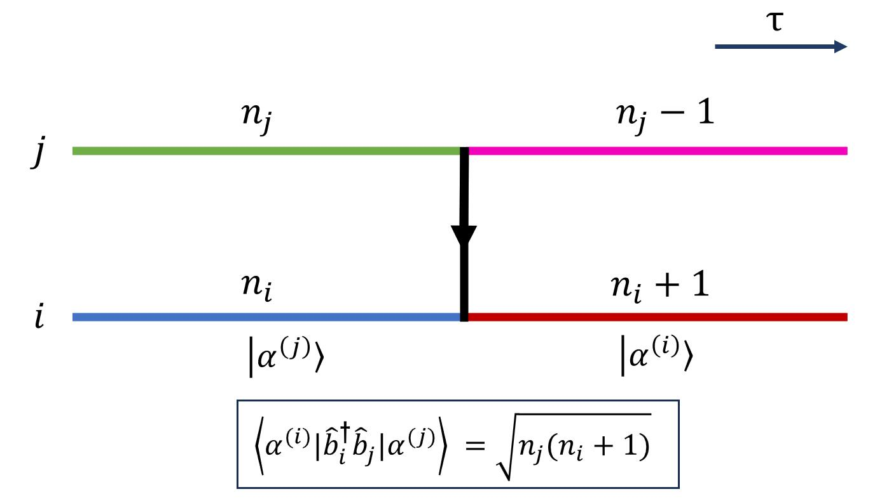
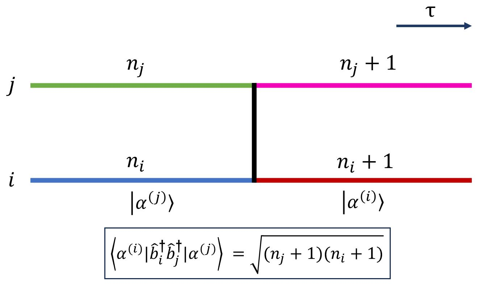
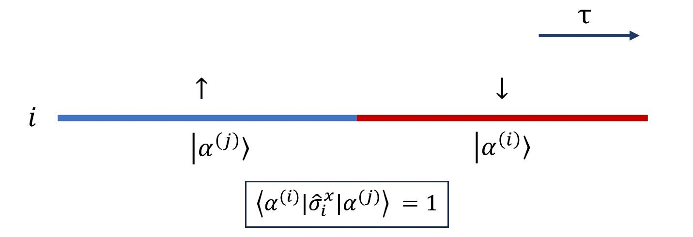

世界线的 Worm 算法¶
配分函数空间 $\mathcal{Z}$¶
概述¶
考虑一个哈密顿量 $\hat{H}$, 对于不同的构型 $\alpha^{(i)}$，配分函数可以写为： $$\mathcal{Z} = {\rm Tr} (e^{-\beta\hat{H}}) = \sum_{{\alpha^{(i)} }} \langle \alpha^{(i)} | e^{-\beta\hat{H}} |\alpha^{(i)} \rangle$$ 在这里，哈密顿量可以视为一个很大的矩阵，其基矢量通常是在 Fock 空间下展开的。
若 $\hat{H}$ 矩阵是 1x1 的，即 c-number，态 $|\alpha\rangle$ 是归一化的数字，即1. 从而，$\mathcal{Z}$ 便退化为经典模型的配分函数。不难看出，相比经典模型，量子模型的权重因为存在算符 $e^{-\beta \hat{H}}$ 不是那么容易就能写出，需要利用完备性关系插入完备的基矢量， 多了一层对态 $|\alpha\rangle$ 演化的求和过程，这体现在其增加了虚时方向的维度，即世界线。
其中 $e^{-\beta \hat{H}}$ 可以和时间演化算符 $e^{-i\hat{H}t}$ 进行类比，我们定义虚时 $\beta = it $. 为了将配分函数捣鼓成可计算的形式，进而构建随机过程进行蒙卡模拟, 我们有很多种选择。
对于费米子体系: * 费曼图蒙卡 : 类比实时量子场论的做法，从格林函数出发，利用微扰论展开均值的表达式，通过对费曼图的抽样，直接得到热力学极限下的观测量。
- 行列式蒙卡 : 以 Hubbard 模型为例，对于 hopping 项，利用 ${\rm Tr} [ e^{-\sum_{i,j} \hat{c}_{i}^\dagger A^{i,j} \hat{c}_j } ] = {\rm Det} [{\bf 1}+e^{-{\bf A}}]$
将权重转化为行列式；对于相互作用项，利用 HS 变换引入辅助场进行解耦。对于玻色子或自旋体系： * SSE 蒙卡 : 利用展开 $e^{-\beta \hat{H}} = \sum_{n=0}^{\infty} \frac{\beta^n}{n!}(-\hat{H})^n$, 将指数上的哈密顿量放下来，从而能够通过写出 $\langle \alpha^{(i)} |\hat{H}| \alpha^{(j)} \rangle$ 来计算权重，设计算法。
而对于世界线的 Worm 算法，其将虚时 $\beta$ 连续化取微元 $d\tau$，对配分函数其中的一个重复单元有 $$ \langle \alpha^{(i)} |e^{-d\tau \hat{H}} | \alpha^{(j)} \rangle \approx e^{-d\tau H_0} \langle \alpha^{(i)} | e^{-d\tau \hat{V}}| \alpha^{(j)}\rangle \approx e^{-d\tau H_0} \langle \alpha^{(i)} | {\bf 1} - d\tau \hat{V}| \alpha^{(j)}\rangle $$ 其中 $\hat{H} = \hat{H}_0 + \hat{V}$, 前者为所选基矢量下的对角项，后者是非对角项。第一个近似利用到了 Trotter 分解，即：
$$e^{-d\tau\hat{H}} = e^{-d\tau\hat{H_0}} e^{-d\tau\hat{V}} + \mathcal{O}(d\tau^2)\approx e^{-d\tau\hat{H_0}} e^{-d\tau\hat{V}}$$
第二个近似是根据 $d\tau$ 为小量而进行的泰勒展开，并展开到1阶 (也可以展开到高阶，但高阶一般都会忽略掉)。
通常非对角项会改变原本的态，一个构型当中发生这种改变的次数计为 $\mathcal{N}$, 从而我们可以写出构型的权重为： $$W = \prod_{(\cdot)=1}^{\mathcal{N}} \langle \alpha^{(i)}|-d\tau\hat{V} | \alpha^{(j)} \rangle \exp \left({-\int_{0}^{\beta} H_0(\tau') d\tau'} \right)$$ 其中 $\alpha^{(i)}$ 和 $\alpha^{(j)}$ 分别表示态发生改变之前和之后的世界面，因此我们只需计算 $\langle \alpha^{(i)}|\hat{V} | \alpha^{(j)} \rangle$，便可根据不同模型的情况设计算法了。
常见的几种 $\hat{V}$¶
为了更加形象，我们举几个例子：
(1) hopping 项 : $$\hat{V} = -t \sum_{\langle ij \rangle} \left( \hat{b}_i^\dagger \hat{b}_j + \hat{b}_j^\dagger \hat{b}_i \right) $$ $\langle \alpha^{(i)} |\hat{V}|\alpha^{(j)} \rangle$ 项不为 0 即要求构型 $|\alpha^{(i)} \rangle$ 和 $|\alpha^{(j)} \rangle$ 之间至少相差一个最近邻的 hopping. 一个从格点 $j$ 跃迁到格点 $i$ 的过程贡献： $$\langle \alpha^{(i)} |\hat{b}_i^\dagger \hat{b}_j |\alpha^{(j)} \rangle =\sqrt{n_j(n_i+1)} \quad ({\rm site} ~j\rightarrow {\rm site} ~i)$$ 其中 $n_i$ 与 $n_j$ 表示跃迁发生之前格点 $i$ 与 格点 $j$ 所拥有的粒子数。 具体情况如下图所示： 
注意 $\alpha^{(i)}$ 当中的 $i$ 是对构型中不同世界面的指标，而 $\hat{b}_i$ 当中的 $i$ 是对某一个世界面当中不同格点的指标。
(2) 长程 hopping 项 : $$\hat{V} = -t \sum_{i<j} \frac{1}{r_{i,j}^{d+\sigma}}\left( \hat{b}_i^\dagger \hat{b}_j + \hat{b}_j^\dagger \hat{b}_i \right) $$ 与短程的情况类似，只不过发生跃迁的范围是任意两个格点，并且要额外带一个和两格点距离相关的系数。
(3) pairing 项 ： $$\hat{V} = -t \sum_{\langle ij \rangle} \left( \hat{b}_i^\dagger \hat{b}_j^\dagger + \hat{b}_j \hat{b}_i \right) $$ 类似于 hopping 项，具体如下图： 
(4) flipping 项 ： $$\hat{V} = -h\sum_{i}\hat{\sigma}_i^x$$ $x$ 方向的泡利矩阵，相当于对自旋态做翻转。通常来说，自旋体系对系数的贡献都是 1，即： 
格林函数空间 $\mathcal{Z}_{\mathcal{G}}$¶
以上几种是常见的 $\hat{V}$ 类型，为了引入 worm，需要定义格林函数，对于玻色体系，有定义： $$\mathcal{G}(i,j,\tau_i,\tau_j) = {\rm Tr}[\mathcal{T} \hat{b}_j(\tau_j) \hat{b}^\dagger_i(\tau_i) e^{-\beta\hat{H}}]$$ $\sqrt{n_j(n_i+1)}$
对于自旋体系，有定义 $$\mathcal{G}(i,j,\tau_i,\tau_j) = {\rm Tr}[\mathcal{T} \hat{\sigma}^{x}(\tau_j) \hat{\sigma}^{x}(\tau_i) e^{-\beta\hat{H}}]$$